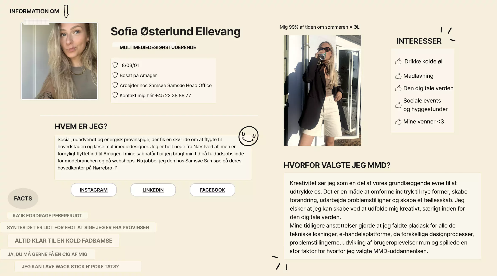
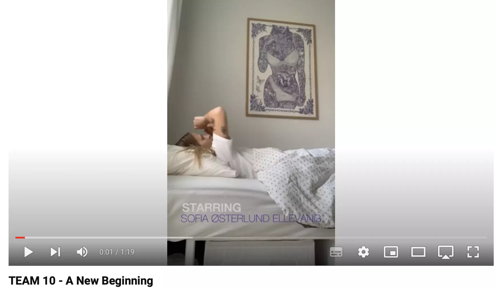

TEMA 1 - INTROUGEN
Vores første tema lå i vores introuge på 1. semester. Vi blev introduceret til uddannelsen, mødte gamle studerende og fik et indblik i en fremtid som multimediedesigner. Vi skulle oprette vores eget domæne, som vi skal arbejde med resten af uddannelsen, et præsentationskort, og herunder en introduktion til programmet Figma, samt til sidst en ugeopgave. I ugeopgaven skulle ud, ud fra en selvvalgt titelsekvens, filme og redigere en introvideo i en sammensat studiegruppe.

Hvad kunne jeg have gjort bedre?
Ikke så frygteligt meget at kunne have gjort anderledes, da alt var meget nyt. Dog kunne min gruppe og jeg godt have aftalt filmning bedre, herunder vinkler - vi filmede lodret i stedet for vandret.

